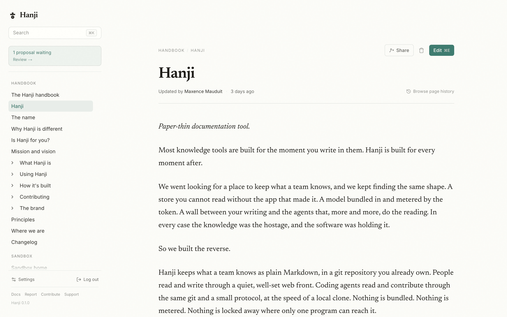
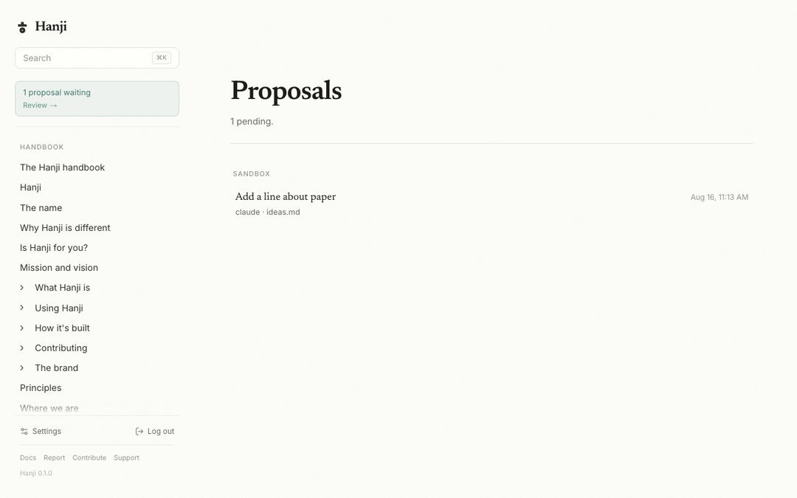
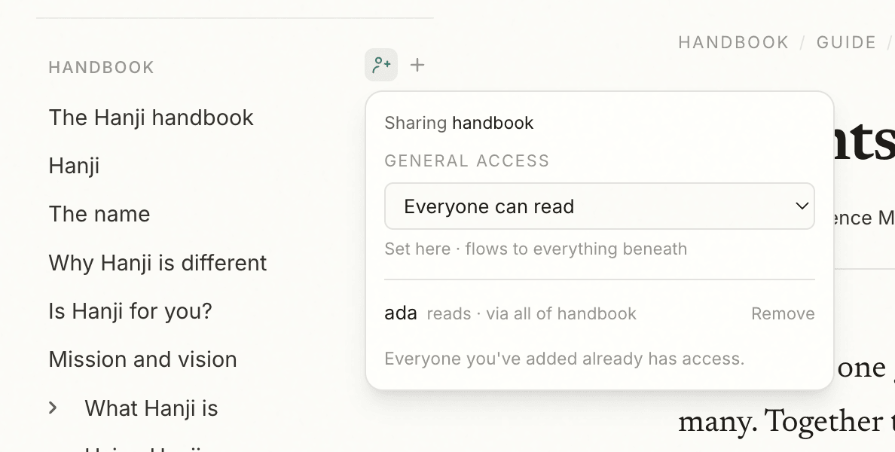

Hanji keeps what a team knows as plain Markdown, in the git you already own. People read and write on quiet, well-set paper. Coding agents read and contribute through the same git and a small protocol. Nothing is bundled, nothing is metered, and nothing is locked where only one program can reach it.
Pre-release. The handbook is public today; the code lands as one clean release.
Pages open on warm paper, set in a serif for long reading. Edit in place; press Update, and one clean commit happens behind you. No draft state to babysit, and a one-word fix is a one-line diff.
Because the store is git, history is not a feature bolted on — it is the commits, shown well.

Your agents already live in git — Hanji gives them a scoped, honest surface. They read through MCP and contribute as proposals: a branch, a diff, and your Merge. Their name stays in history, because a year from now git blame should still tell the truth.

General access flows down like you'd expect; people are the exceptions that punch through. A note two people share is invisible to everyone else — tree, search, links, all of it — and a locked page looks identical to one that does not exist.
One read path enforces this for humans and agents alike. An agent holds exactly what it was granted, never more.

No bundled model. No credits. No wall between your writing and your agents.
Walk away whenever — it's Markdown in your repositories. The documentation you'll read next is itself a Hanji export, llms.txt included.
 Hanji
Hanji